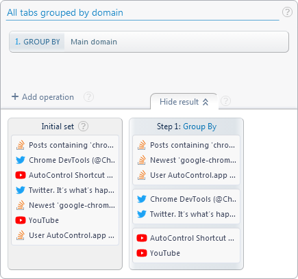

Forum
Install now from theChrome Web Store
Forum
Install now from theChrome Web Store
Forum
Install now from theChrome Web Store
Forum
Install now from theChrome Web Store
//Get all tab IDs in the current window from left to right
let currWinTabs = await ACtl.getTabIds('#currWinTabs') ;
//For each of those tabs
for( let tabId of currWinTabs ){
//Activate the tab
await ACtl.setTabState(tabId, 'active') ;
//And sleep for half a second
await ACtl.sleep(500) ;
}//Get all tabs grouped by domain
let tabGroups = await ACtl.getTabIds('All tabs grouped by domain', false) ;
//For each tab group
for( let group of tabGroups ){
//If the group has 3 or more tabs
if( group.length >= 3 ){
//Pin all tabs in the group
ACtl.setTabState(group, 'pinned') ;
}
}